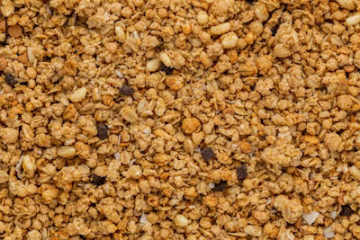
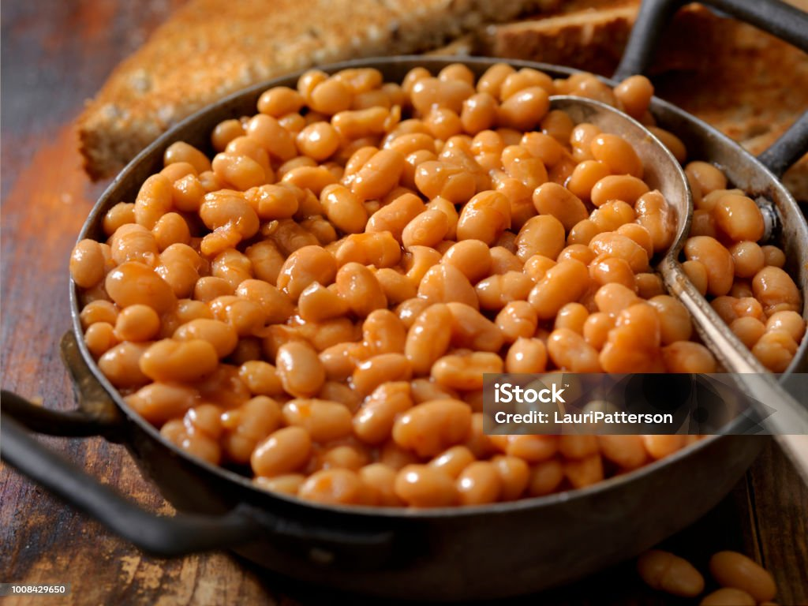

SIX CLASSES OF FOOD
six classes of food
Carbohydrates
Carbohydrates are the main source of energy for the body. They are made up of carbon, hydrogen, and oxygen. They are found in foods such as bread, rice, pasta, potatoes, and fruits.
- Rice
- Wheat
- Maize
- Sorghum
- Millet
IMPORTANCE OF CARBONHYDRATE
It provides energy for the body
It helps in the digestion of food


Proteins
Proteins are essential for growth and repair of the body. They are made up of amino acids. They are found in foods such as meat, fish, eggs, milk, and beans.
- Meat
- Fish
- Eggs
- turkey
- Beans
IMPORTANCE OF PROTEINS
It helps in the growth and repair of the body
It helps in the formation of hormones and enzymes


Vitamins
Vitamins are essential for good health. They help the body to use other nutrients. They are found in foods such as fruits, vegetables, and dairy products.
- citrus fruits
- vegetables
- dairy products
- potatoes
- carrots
IMPORTANCE OF VITAMINS
It helps to fight infection in the body
It helps in the formation of red blood cells

Minerals
Minerals are essential for good health. They help the body to use other nutrients. They are found in foods such as fruits, vegetables, and dairy products.
- Iron
- Calcium
- Phosphorus
- Magnesium
- Zinc
IMPORTANCE OF MINERALS
It helps in the formation of bones and teeth
it helps control the balance fluids inside and outside the cell


Fats
Fats are essential for good health. They help the body to use other nutrients. They are found in foods such as fruits, vegetables, and dairy products.
- Butter
- Oil
- Avocado
- Coconut
- Groundnut
IMPORTANCE OF FATS
It helps in the formation of hormones and enzymes
It helps in the formation of cell membranes


Water
Water is essential for good health. It helps the body to use other nutrients. It is found in foods such as fruits, vegetables, and dairy products.
- Watermelon
- Orange
- Pineapple
- Apple
- Coconut
IMPORTANCE OF WATER
It helps in the formation of hormones and enzymes
It helps in the formation of cell membranes